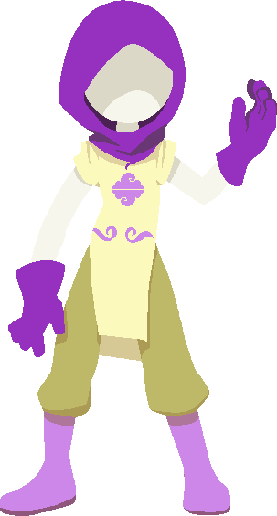
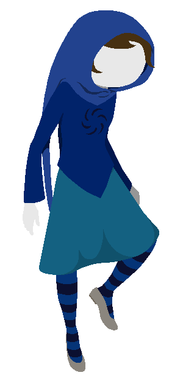
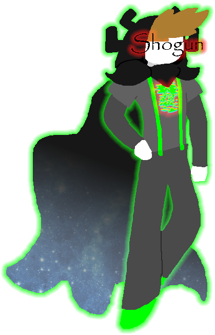
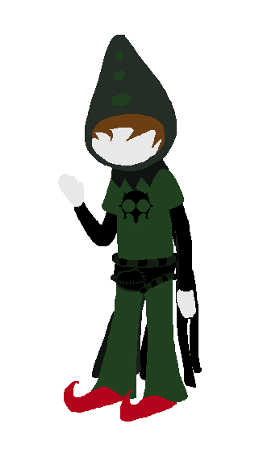
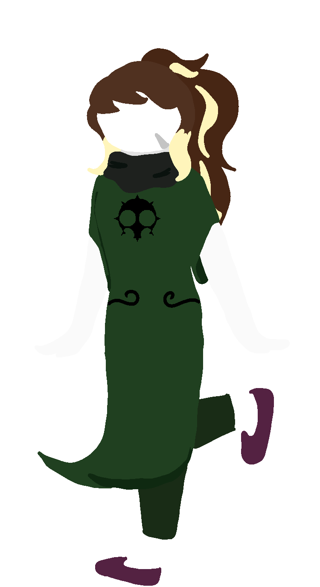
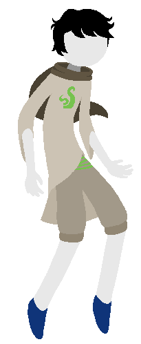
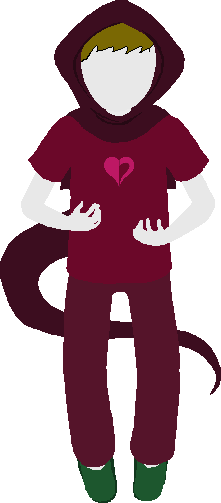
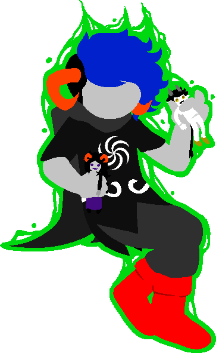
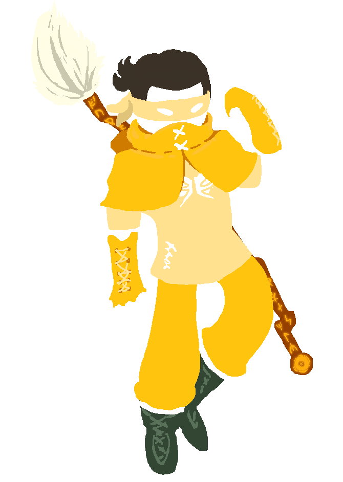

|
jadedResearcher (JR)

|
Classpect: Waste of Mind
Speciality: Programming and Ideas Implementing
Join Date: January 13th, 2017
Long long ago, in the far away past of 2017, JR had a very important Decision to make. What would they do while waiting for Hiveswap to come out, which was DEFINITELY going to come out in January and you would be a fool for suggesting otherwise. They decided to try their hand at making a "roguelike" SBURBSim game that played itself and was different every time. The rest is history. Miraculously, the Sim didn't end when Hiveswap came out like eleven fucking months later.
JR enjoys coding, coding some more, doing stupid shit (usually involving code) and packing literally everything as full of secrets, easter eggs, and lucky charms as they can get. JR is a sadistic puzzle master and definitely not bad at secrets. Their Denizen is Janus, and it became retroactively a refrance to the Sim being founded in January. |
|
karmicRetribution (KR)

|
Classpect: Smith of Dream
Speciality: Art and Auspiticsm
Join Date: January 24th, 2017
So have you ever gotten interested in a friend's project, and then thought "Oh look, there's a small thing I can help them with! It should only take a few minutes, even!" And a few weeks later you found yourself using all of your spare time to work on the project?
Yeah.
Anyway, I'm karmicRetribution, Smith of Dream (because canon is for plebs), and I did most of the foundational graphics work on the sim. I try to stop JR from hate-macking on good taste so that we can all enjoy looking at the site instead of clawing our eyes out. Also, I accidentally enabled the Shogun's ascension. Whoops, my bad. |
|
paradoxLands (PL)

|
Classpect: Witch of Void
Speciality: Programming and Code Design
Join Date: June 24th, 2017
JR Notes: PL is a v good Void Player and obscured and warped the sim's source code during the Great Refactoring.
|
|
Shogun (Just Shogun)

|
Classpect: Shogun of Sauce
Speciality: BigBads and Lore Management
Join Date: November 12th, 2017
JR Notes: Shogun showed up out of nowhere and brought soulful and epic big bads to SBURBSim.
|
|
manicInsomniac (MI)

|
Classpect: Bard of Doom
Speciality: Music and Writing
Join Date: Pre-Discord
JR Notes: MI works on data entry, brainstorming, music (and running LOHAE's shop) and championing the NPC Update.
Also assists in wrangling Errant Sessions. |
|
nebulousHarmony (NH)

|
Classpect: Seer of Doom
Speciality: Art and Pixel Defeating
Join Date: 02-24-19
JR Notes: Neb does art assistance, especially working on the Afterlife and defeating stray pixels and other problems with submitted doll parts.
|
|
aspiringWatcher (AW)

|
Classpect: Scribe of Life
Speciality: Classpect Brainstorming
Join Date: Pre-Discord
JR Notes: AW is an expert on all things glitchfaq, and comes up with overarching ways to integrate with it or expand upon the very limited canon facts about SBURB that are available.
|
|
tableGuardian (TG)

|
Classpect: Heir of Heart
Speciality: AI, Debugging and Data Entry
Join Date: July 27th, 2017
JR Note: TG has been helping out with using the AI Engine, designing the Obscure Game and tracking down bugs.
|
|
insufferableOracle (IO)

|
Classpect: Mage of Space
Speciality: Art and Troll Facts
Join Date: June 13th, 2017
JR Notes: InsufferableOracle is also known as PopoMerrygamz and does amazing sprite work.
|
|
yearnfulNode (YN)

|
Classpect: Rogue of Hope
Join Date: September 15th, 2018
JR Notes: yearnfulNode made amazing meme videos online and then helped out with Paldemic and the NORSE SESSION.
|